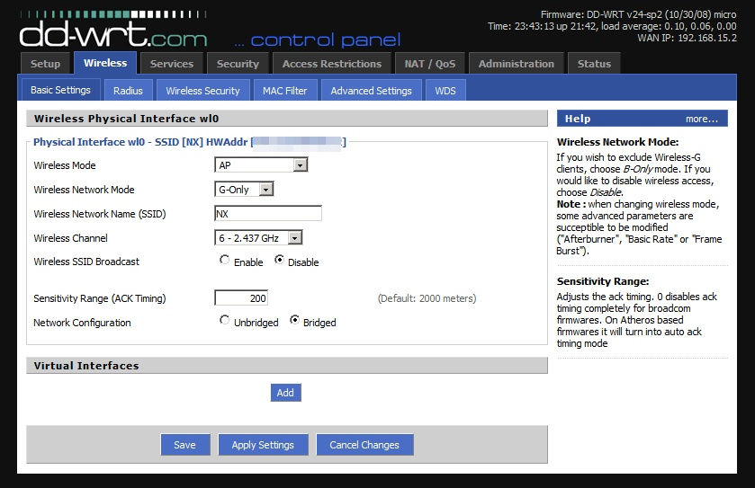
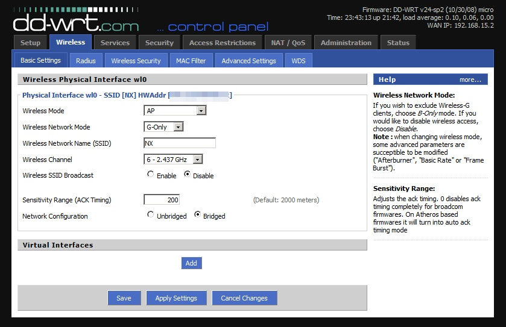
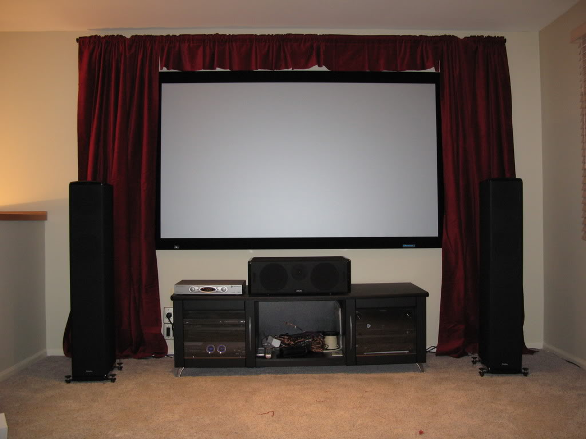
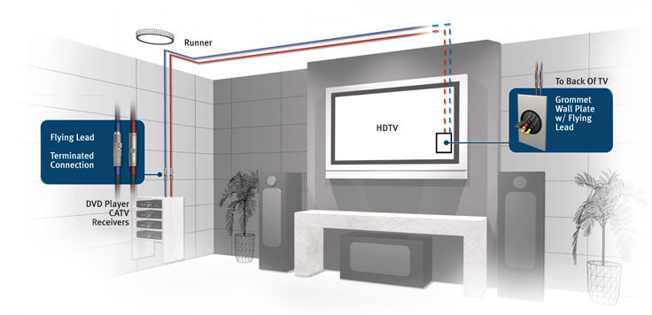

Custom Builds
- Sick of buying systems that need endless upgrades in order to keep the promises they make? Let Martin build you a system to exceed your wildest dreams!
Virus Removal

- Been surfing the darker portions of the internet? Just had to check out that ONE email in the spam folder? Martin can help you take care of that.
Ad-Ware Removal
- That Java update download replaced your Google search with Ask.com again? Martin can help -- AND show you what to look out for next time!
Data Recovery
.jpg)
- Oh Noes! All your work is on that drive that failed? Martin can get that back for you.
Home Networking
 

- Desktops, laptops, cell phones, tablets, and smart TV's should work together in a beautiful symphony...and Martin knows how to make you the Conductor!
Home Theater
- Theaters?? We don't need no stinking theaters! Martin can suggest connected audio and video options to meet a range of budgets.
 Remote Assistance
- Most times of the day or night Martin can (with your permission) log in to your computer with you and help you figure things out.
Database Access
- Sick of asking for help for simple problems? You can have access to Martin's database of manuals, tips, tricks, and solutions.

Consulting
- Thinking of striking out on your own and building that awesome computer you've always dreamed of? Don't know where to start? Martin would LOVE to help you learn!